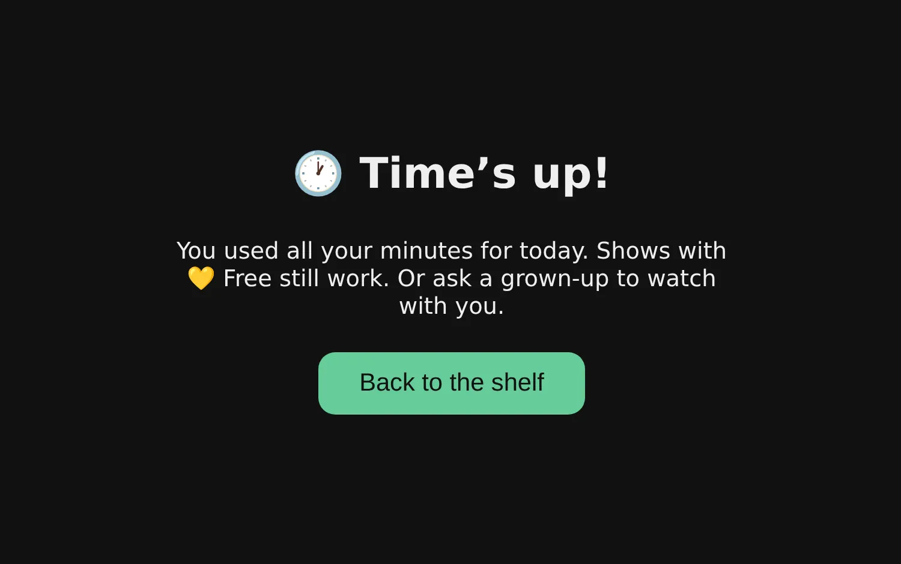

Automatic daily time limits
Each kid picks their name, types their own PIN and sees how many minutes are left today.
The minutes count down while they watch. At zero the video stops and the shelf says
Time's up!
, so you are not the one who has to say it.
Minutes they don't use are saved for another day. You can give or take away minutes any time, and Watch together lets a grown-up switch the limit off while you watch with them.